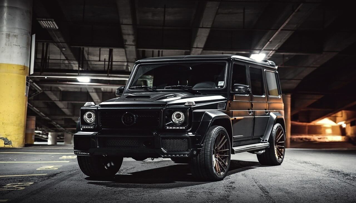
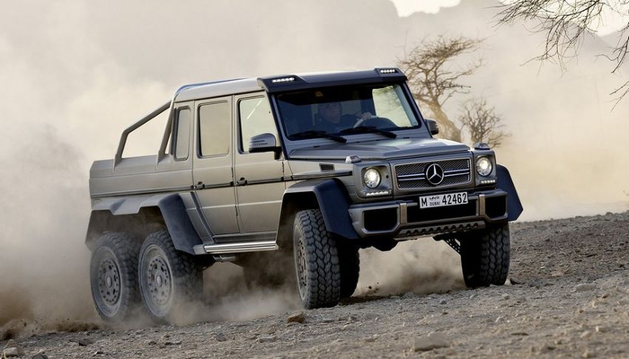
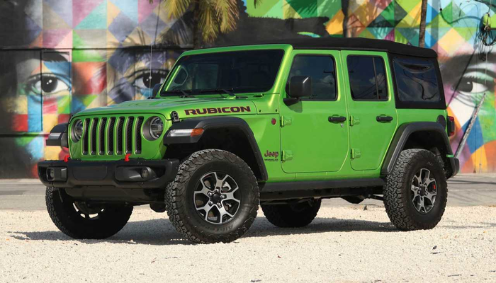
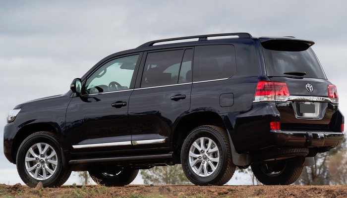

Внедорожники
Mercedes-Benz G-class является самым дорогим серийным внедорожником из представленных на российском рынке официально. Но 14 млн за версию G 65 AMG — не предел. Мы собрали топ тюнингованных "Геликов", стоимость и оснащение которых нас поразили.
Что в тюнинг-ките. Вот таким в Mercedes-Benz видят настоящий внедорожник. С приводом 6x6, понижающим редуктором, пятью блокируемыми дифференциалами, портальными мостами, системой регулирования давления в шинах и специальной непробиваемой подвеской. Вероятно, за 27 миллионов рублей (примерно столько стоит G 63 AMG 6x6 "в сборе"), владелец захочет иметь не только неограниченный внедорожный потенциал, но и комфортный и эксклюзивно отделанный салон. Получите: даже погрузочная платформа отделана массивным бамбуком, интерьер отделан кожей designo красного или светло-коричневого цветов. Кроме того, все четыре отдельно стоящих кресла имеют электрорегулировку, подогрев и вентиляцию.
Wrangler – это, пожалуй, главный и самый узнаваемый автомобиль марки Jeep. Можно сказать, талисман или символ всего бренда. Его знают и мгновенно узнают даже люди мало интересующиеся автомобилями. «Смотрите, это Jeep», - говорят они, указывая в сторону припаркованного неподалёку или проезжающего мимо «Рэнглера».
Достигнув вершин роскоши, легендарный внедорожник остался верен своим традициям. Колоссальный арсенал внедорожных технологий и классическая рамная конструкция кузова наделяют Toyota Land Cruiser 200 по-настоящему безграничными возможностями и несгибаемым характером.